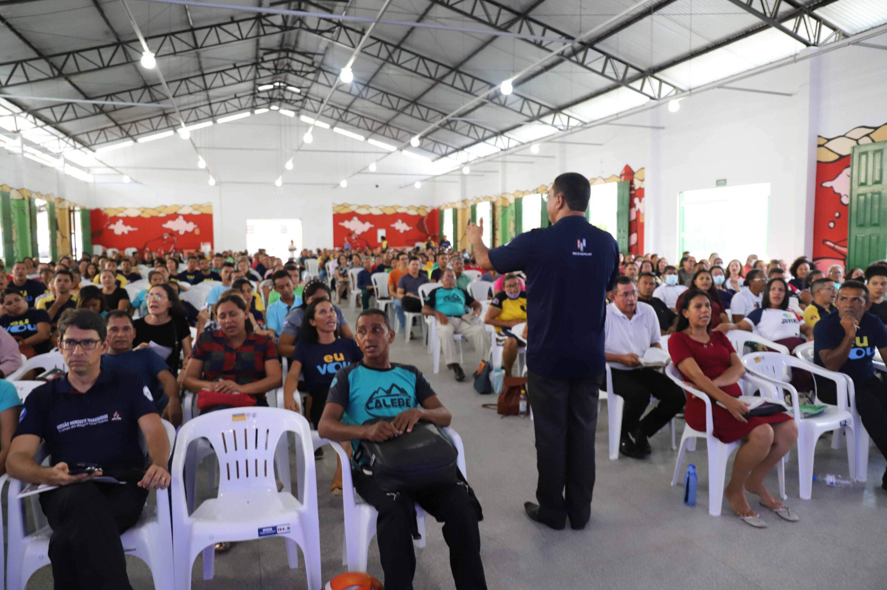

Missão Maranhão
Conheça a história de Ana e sua família, que atuam com evangelização, cuidado e apoio às comunidades do Maranhão.
Ana e Família
Ana, seu esposo Daniel e suas duas filhas desenvolvem um trabalho missionário voltado para famílias em situação de vulnerabilidade.
A equipe realiza encontros comunitários, atividades com crianças, visitas e ações de apoio espiritual e social.
Informações da família
- Responsável: Ana Ferreira
- Idade: 34 anos
- Esposo: Daniel Ferreira, 36 anos
- Filhos: Elisa, 9 anos, e Clara, 5 anos
- Local de atuação: Interior do Maranhão
- Início do projeto: 2022

Servindo com amor e dedicação
A missão Maranhão começou a partir de visitas realizadas por uma equipe da igreja a comunidades que precisavam de acompanhamento e apoio.
Ana e sua família passaram a participar diretamente desse trabalho, organizando encontros, momentos de oração, estudos bíblicos e atividades para crianças.
O objetivo do projeto é construir relacionamentos, fortalecer famílias e apresentar a mensagem do Evangelho de forma acolhedora e próxima.
Galeria de fotos


Faça parte dessa missão
Você também pode contribuir com esse projeto por meio da oração, participação e apoio às ações missionárias.